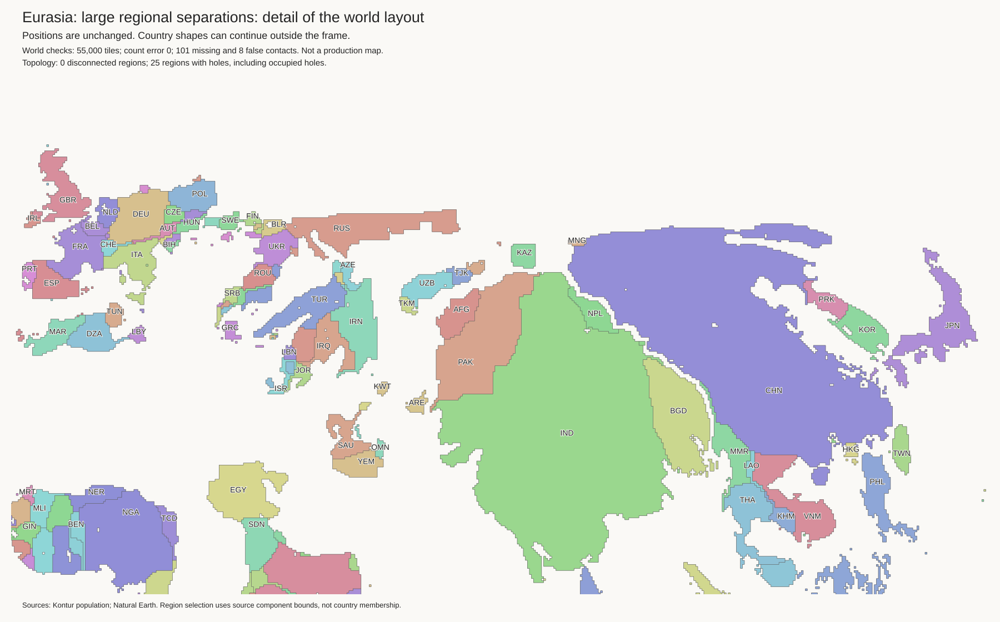
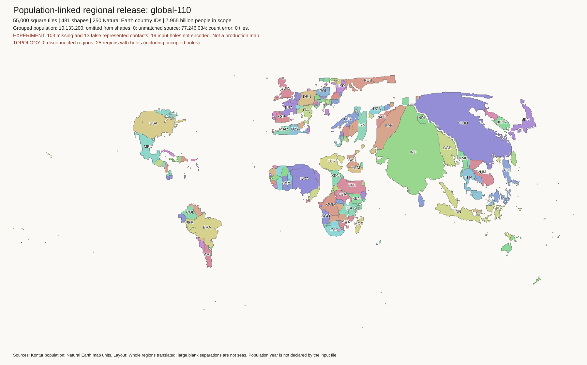
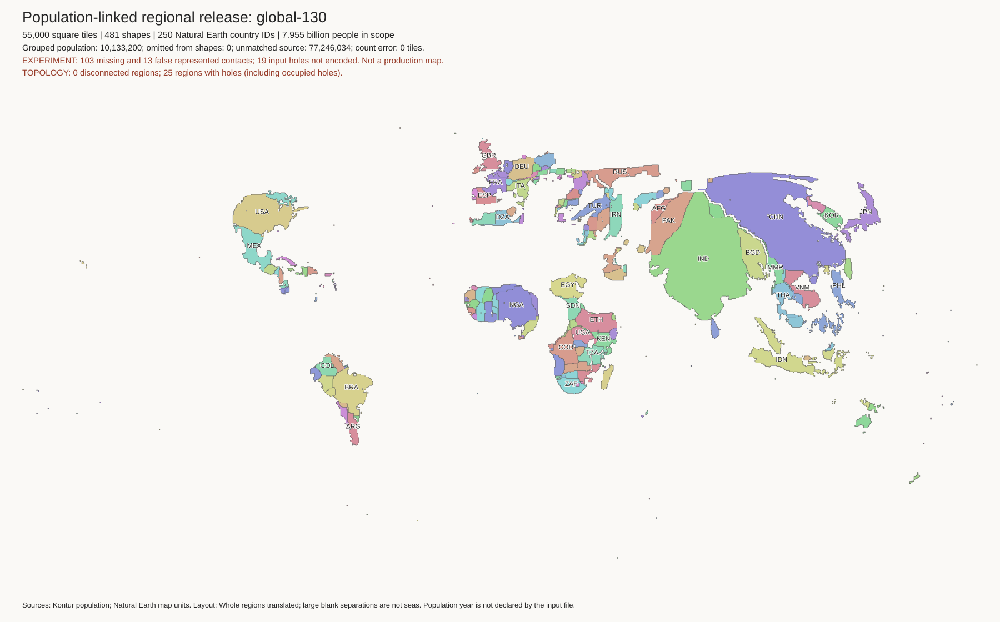
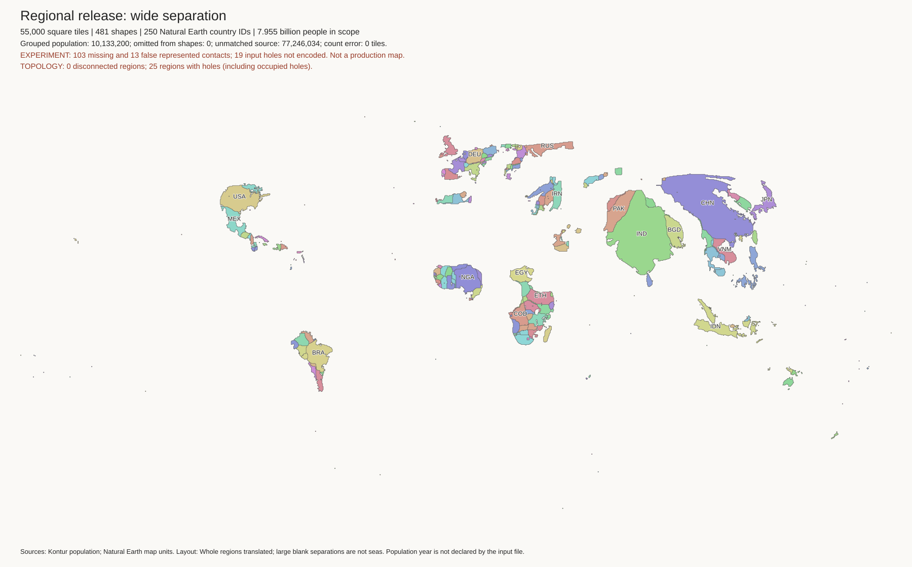
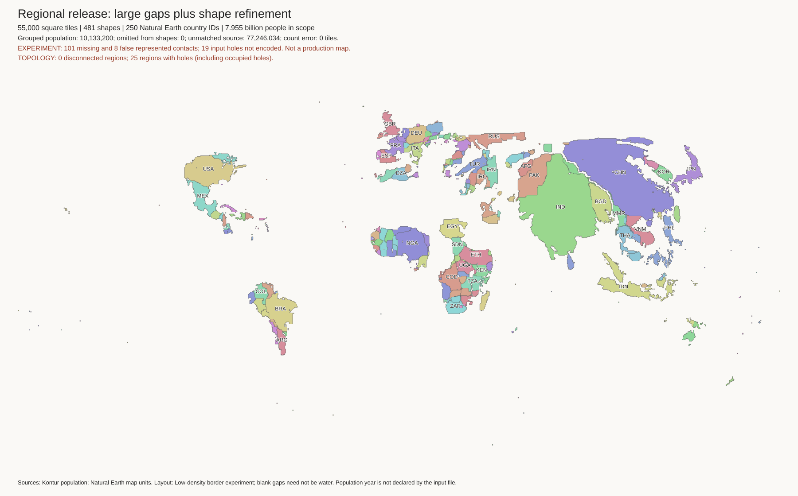
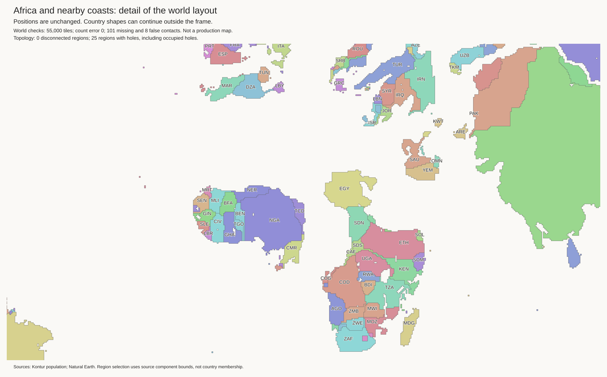

Experiment, not a replacement map. These tests allow large moves, not just narrow border gaps. The published H3-MON map is unchanged. Blank separations are not geographic seas.
Method and commands · Work log · Measurements · Input with empty lakes · Earlier small-gap tests
Russia stays beside Europe. China moves far away. No connector paths were added. Japan stays together beside Korea. This gives the large-scale separation that the earlier tests did not.

Whole world · Africa and lakes · Indonesia · Tile coordinates · Refinement report · Outline comparison
All four layouts keep 55,000 land tiles, all 481 component budgets, and 220 empty cells in 45 named lakes. Each component stays connected. Lake cells do not consume country tiles. Lake shores and nearby island chains move together. Overseas islands do not follow country IDs.
The regional grouping removes 40 existing true contacts. 20 fail the earlier sparse-border test. Thus this is not yet a solution that removes only sparse borders. The method uses border-corridor population weights to form 65 groups. Hard protection of all other borders would still link Russia and China through chains of countries.
West Africa separates too far from East and Southern Africa. The widest test adds too much ocean space. Some old island-position errors remain because island chains move intact. These are reasons not to replace the current map with this experiment.
| Layout | Russia–China distance | Missing / false contacts | Outline error |
|---|---|---|---|
| Input | 1.00 | 63 / 34 | 0.42690 |
| Spacing 1.1 | 41.62 | 103 / 13 | 0.42690 |
| Spacing 1.3 | 48.10 | 103 / 13 | 0.42690 |
| Spacing 1.8 | 158.90 | 103 / 13 | 0.42690 |
| Spacing 1.3 + refinement | 56.92 | 101 / 8 | 0.40372 |
Distance is the nearest tile-centre distance between the largest mainland components, in tile spacings. Outline error compares aligned, equal-area shapes; lower is better. It does not measure relative position. Rigid moves do not improve that score. The 150 refinement rounds reduce it by about 5.4%, but create six new enclosed empty cells. They protect contacts that remain after translation, not those already removed.

Eurasia · Moves and lost borders · Tiles

Eurasia · Moves and lost borders · Tiles

Eurasia · Moves and lost borders · Tiles


The lakes remain empty. However, the regional split makes Africa less recognizable.
This archived reference uses different colours and component rules. Compare the regional arrangement, not the colour or absolute image scale.
Test joint regional placement with explicit costs for lost populated borders and nearby coast errors. Reward shape improvement, not separation alone. Retain the exact tile and empty-lake checks. All 187 automatic-cartogram tests pass. No new population mapping has been published.